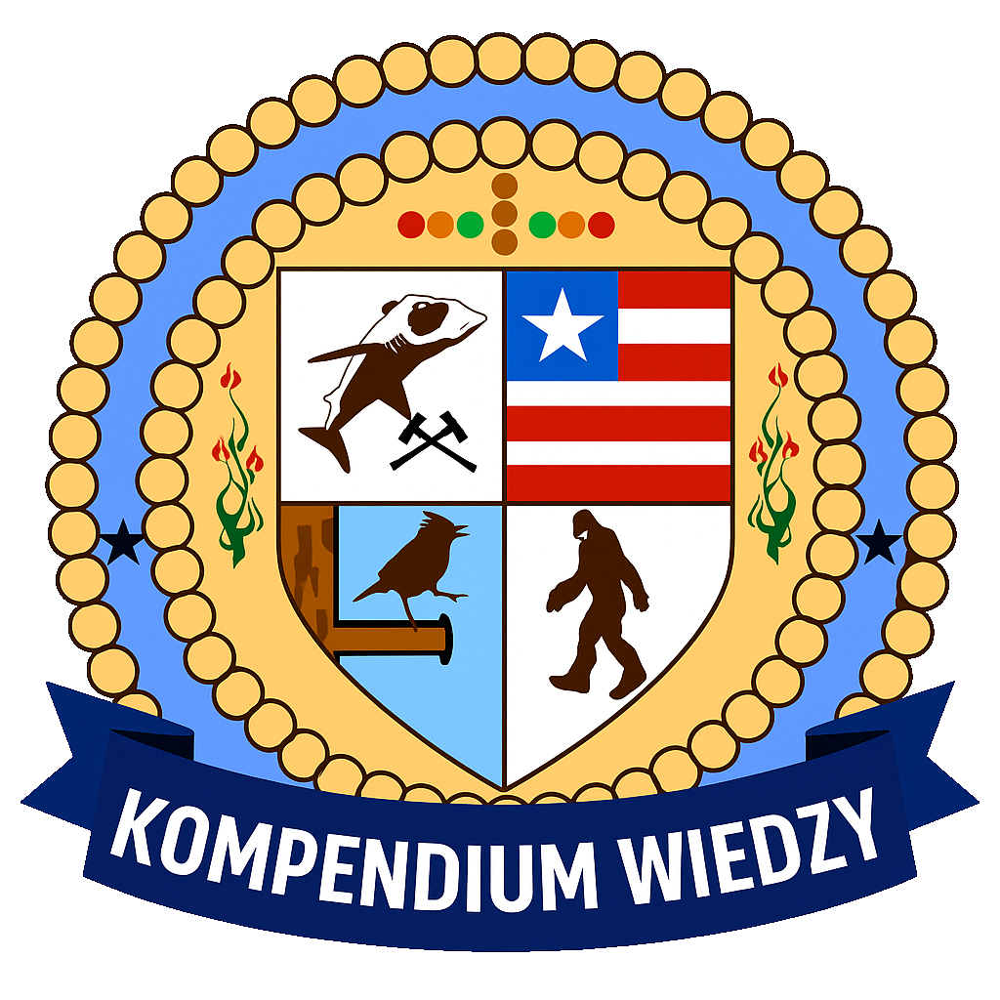

╔════≫──────๑ Kompendium Wiedzy LSPD ๑──────≪════╗
║───────────────────────────────────────────────────────────────────────────────────────────────────║╭━━━ Miranda ━━━╮
Prawo Mirandy – jest to zbiór praw, które funkcjonariusz ma obowiązek przedstawić osobie zatrzymanej podczas procedury aresztowania. Najczęściej odczytywane jest w trakcie transportu do komendy lub bezpośrednio przed przeszukaniem na celach.
➔ Prawa muszą zostać przedstawione przed przeszukaniem na celach
➔ Muszą być w pełni słyszalne i zrozumiałe dla osoby zatrzymanej
➔ Funkcjonariusz ma obowiązek zapytać, czy zatrzymany zrozumiał swoje prawa
➔ W przypadku braku odpowiedzi, milczenie traktowane jest jako akceptacja
➔ Funkcjonariusz nie ma obowiązku powtarzać Prawa Mirandy trzeci raz
PRAWO MIRANDY
Mój numer odznaki [ xxx ], imię i nazwisko.
Ma Pan/i prawo zachować milczenie. Wszystko, co od tej pory Pan/i powie, może i będzie wykorzystane przeciwko Panu/i w sądzie.
Ma Pan/i prawo do pomocy medycznej, wsparcia psychologa oraz uczestnictwa adwokata.
Czy zrozumiał Pan/i swoje prawa?
Ma Pan/i prawo zachować milczenie. Wszystko, co od tej pory Pan/i powie, może i będzie wykorzystane przeciwko Panu/i w sądzie.
Ma Pan/i prawo do pomocy medycznej, wsparcia psychologa oraz uczestnictwa adwokata.
Czy zrozumiał Pan/i swoje prawa?